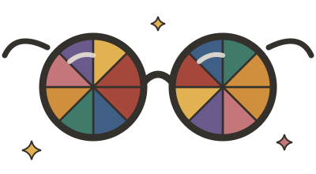
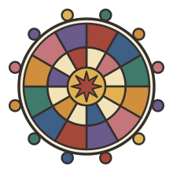

An essay from Mike
Why a theme park for connection
By Mike "Wonka" Wang · 3 minute read
I've spent my career building theme parks for connection. I didn't always call them that. At Minerva, the park was a university that moved through cities. At Long Journey, it's the founder experience: haircuts that change how people see themselves, retreats, and rituals that help founders remember who they are. Each one was a single ride inside a bigger park I hadn't built yet.
The belief underneath is simple. Experiences should work like magic glasses (I learned this from Cyan). You put them on, and you leave seeing the world, or yourself, a little differently.
Experiences should work like magic glasses.

Theme parks already know how to design for wonder. They choreograph arrival, anticipation, surprise, and the walk home. They just point all of it at spectacle. I want to point it at connection.
The vision is a place in San Francisco, open year round, built for authentic connection. JoyCon is the pop-up version.
